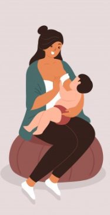

<ion-header [translucent]="true">
  <ion-toolbar color="rosa-fraco">
    <ion-buttons slot="start">
      <ion-back-button color="rosa-forte" defaultHref="/audio-livro"></ion-back-button>
    </ion-buttons>
    <ion-title color="dark">Livros</ion-title>
  </ion-toolbar>
</ion-header>


<ion-content [fullscreen]="true" color="rosa">

  <ion-list>
    <ion-item href="https://drive.google.com/file/d/15C_mGgfPEmtvky6nzriFPAScMWmHqhbX/view" target="blank" lines="full" color="rosa-fraco">
      
      <ion-label class="ion-text-wrap">
        <div class="desc">
          <h3>Revista</h3>
          <p class="autor">PT (BR)</p>
        </div>
      </ion-label>
    </ion-item>
    </ion-list>

  <ion-list>
    <ion-item href="https://drive.google.com/file/d/1r4CoWbDH29BViVGza1ZG4JjpJtK4NVco/view" target="blank" lines="full" color="rosa-fraco">
      
      <ion-label class="ion-text-wrap">
        <div class="desc">
          <h3>Gestação, Vida e Saúde</h3>
          <p class="autor">PT (BR)</p>
        </div>
      </ion-label>
    </ion-item>
    <!-- Gestação, Vida e Saúde -->
  </ion-list>

</ion-content>
